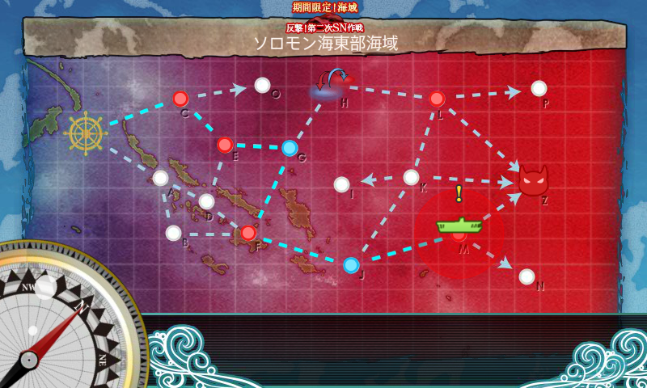
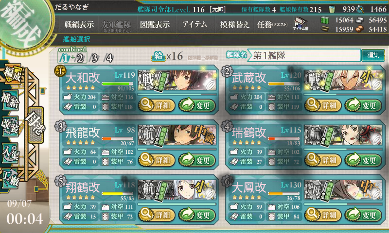
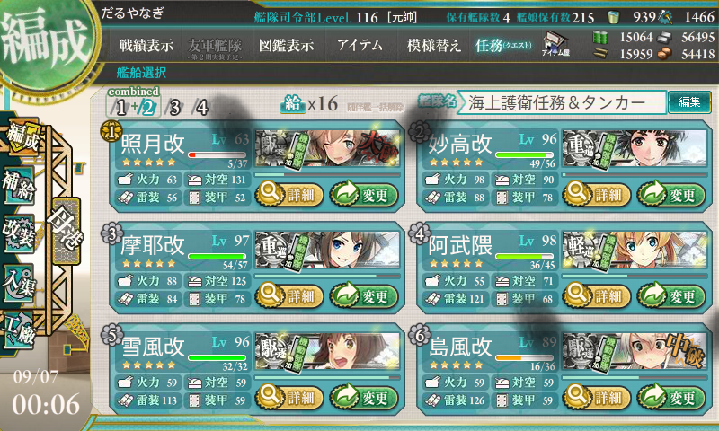
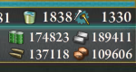
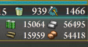

艦これ夏イベント2015：E7 FS方面海域 周回
公開日：

難易度【乙作戦】で M → Z 掘り。
別のところでも書いたけど、編成はあまり変えていない感じ。
E7 でゲットした「照月」のレベル上げをしたかったので、防空担当駆逐艦を「秋月」から「照月」にスイッチ。同様の理由で「龍驤」は下げて「祥鳳」を入れました。これでも制空は問題ないみたい。
- 第一艦隊
- 大和改(Lv113)：主砲×2＋水偵＋徹甲弾
- 武蔵改(Lv113)：主砲×2＋水偵＋徹甲弾
- 瑞鶴改(Lv107)
- 翔鶴改(Lv115)
- 祥鳳改(Lv96)
- 隼鷹改二(Lv97)
- 第二艦隊
- 照月（Lv35）：主砲＋主砲（高射装置つき）＋対空電探［対空カットイン］
- 雪風改(Lv90)：魚雷×3
- 鳥海改(Lv88)：主砲×2＋夜偵＋三式弾
- 摩耶改(Lv92)：主砲＋高角砲＋夜偵＋集中配備機銃［対空カットイン］
- 北上改(Lv125)：甲標的＋副砲×2
- 阿武隈改二(Lv97)：甲標的＋魚雷×2
装備は第一艦隊の戦艦を【徹甲弾】に換装。取り巻きを確実に殲滅できるようにします。三式弾じゃないのでボスへのダメージという点では劣りますが、カットインが入れば昼砲撃戦でボスにも割とダメージが通るので問題なし。昼戦のみで戦闘が終わることすらたまにあるほどでした。仮に夜戦に持ち込まれても、4番目の「摩耶」まで攻撃巡が回ることはほとんどなく、ちゃんとS勝利がとれます。
一方、第二艦隊は北上を副砲装備にして命中率重視。逆に阿武隈は開幕雷撃の威力をあげるために魚雷をマシマシ。
クリア時も含めて73回出撃。M マス S 勝利は 43回。

神通,なし,多摩,愛宕,なし,陽炎,なし,なし,なし,摩耶,なし,なし,時雨,多摩,荒潮,夕立,千歳,利根,球磨,朝潮,朝潮,霞,青葉,浦風,衣笠,なし,浦風,なし,なし,白露,なし,霰,長良,筑摩,なし,なし,那珂,五月雨,なし,荒潮,
めぼしいのは浦風だけだった。浦風砲は割と溜まってるので、養殖するかどうか悩む……。
Z マス S 勝利はクリア時も含めて17回（意外に少ないなぁ！ 到達は36回らしいので、面倒でも決戦支援を出しておけばよかったかもしれない）。M マスを抜けられる確率が 3/4、さらに抜けた後 S 勝利をとれる確率が 1/2 って感じ。

球磨,比叡,北上,榛名,高雄,阿武隈,日向,高雄,浜風,谷風,巻雲,巻雲,高雄,島風,まるゆ,妙高,風雲,
掘ってる間はコモン艦しか出ねえと感じていたけれど、振り返ってみるとドロップは割と豪華だった。
イベント完了！！！！ pic.twitter.com/5qNyxvhUPS
— だるやなぎ に天使が舞い降りた！ (@daruyanagi) 2015年9月6日
2015-09-07 00:00:17 無事ゲット。なんかキリのいい時間にアタックすると「風雲」をドロップするというオカルトがあったけど、狙ったわけではないが、うちも正時に落とせた。案外ウソでもないのかもね（たぶんただの偶然だと思うケド）。


みんなお疲れさま。「照月」のレベルが 63 まであがってて、笑ってしまった。気付けば「阿武隈」もケッコン間近。ほんとうに頑張ってくれました。みんな、もっと「阿武隈」の指示に従ってあげるべきだと思う。
おまけ
 → 